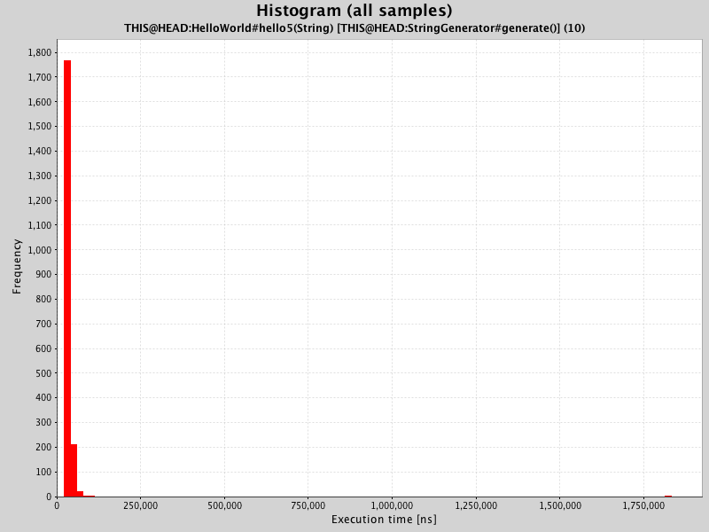
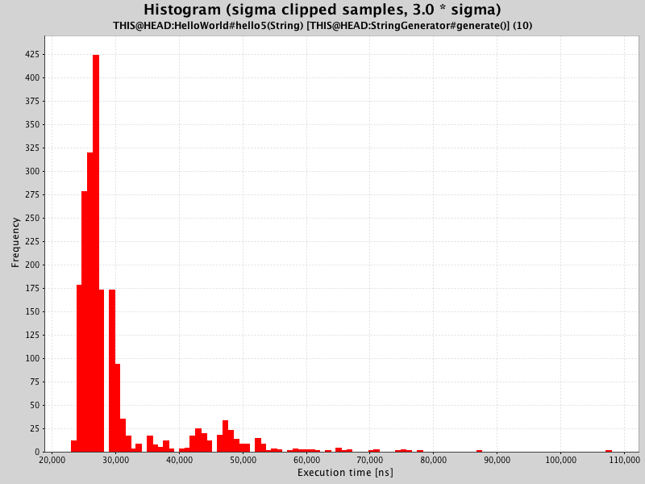
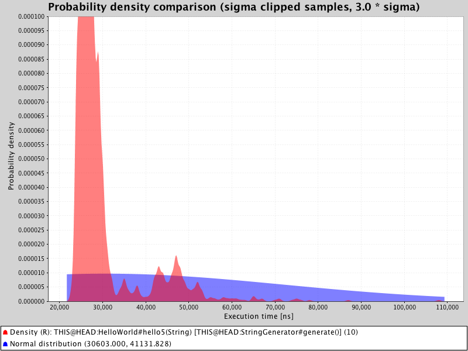
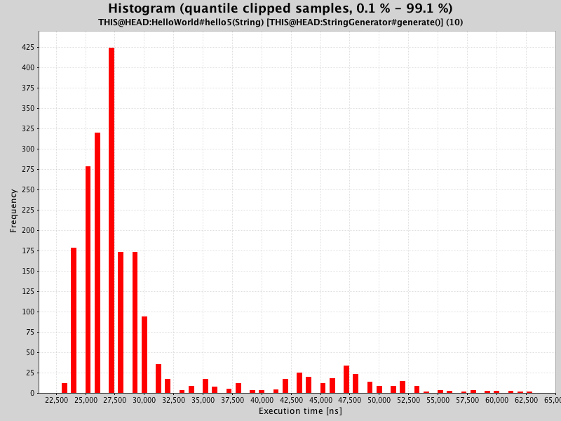
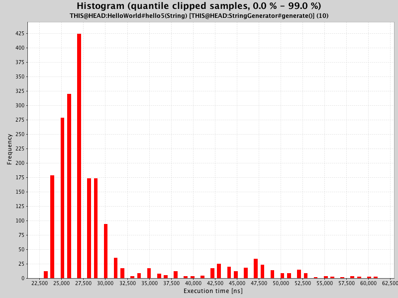
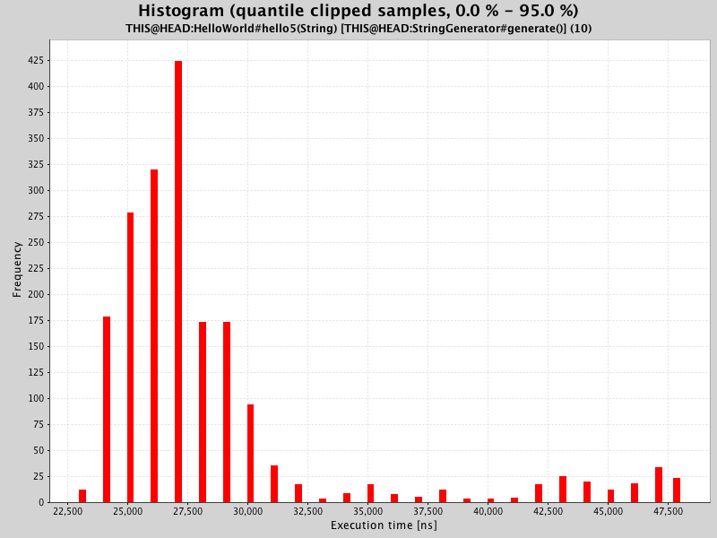
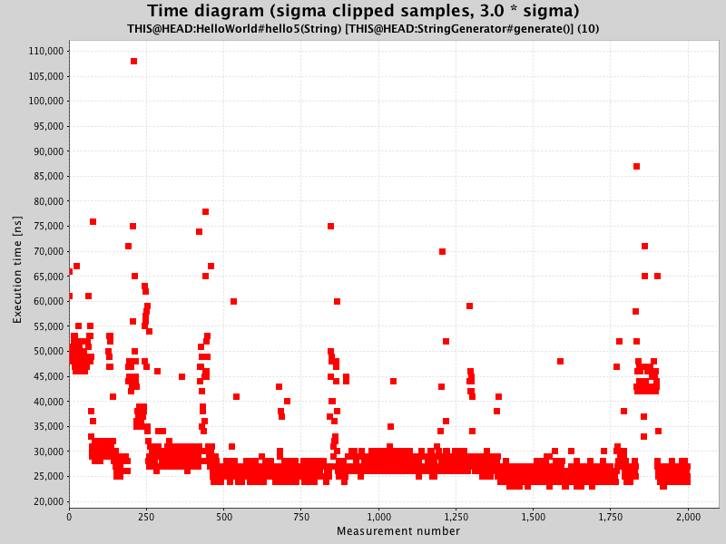
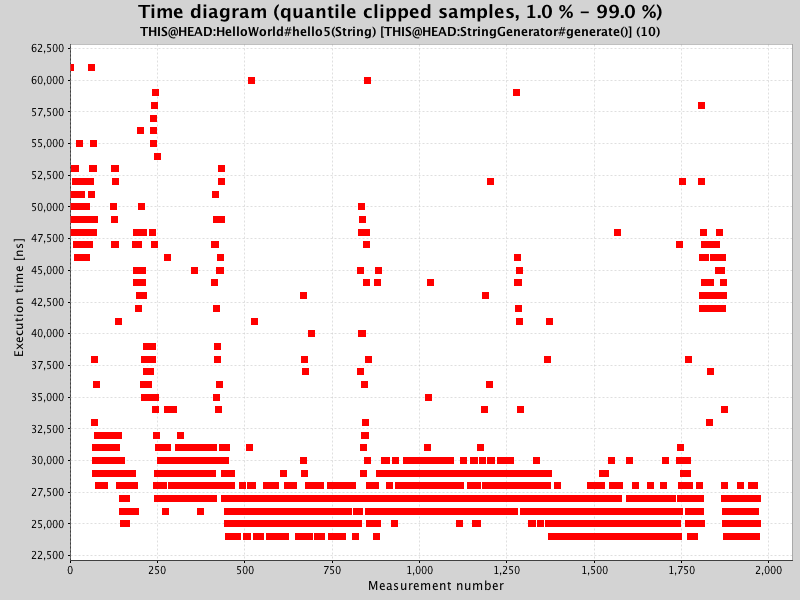

Measurement detail
| Method | THIS @ HEAD : main.HelloWorld #hello5 |
| Generator | THIS @ HEAD : main.StringGenerator #generate () |
| Generator parameters | 10 |
| Measured date | 01-Jul-2016 14:26:46 |
| Measured on | Lotties-MacBook-Air.local (local) |
Statistical data
 Sample count Sample count |
2000 |
| Warmup count | 1000 |
| Mean | 30.60 µs |
| Standard deviation | 41.13 µs |
| Standard deviation / mean | 134.40 % |
| Median | 27.00 µs |
|
Median / mean |
88.23 % |
| Minimum | 23.00 µs |
| Maximum | 1833.00 µs |
Histogram(all samples)

Histogram(sigma clipped samples, 3.0 * sigma)

Density comparison(sigma clipped samples, 3.0 * sigma)

Histogram(quantile clipped samples, 0.1 % - 99.1 %)

Histogram(quantile clipped samples, 0.0 % - 99.0 %)

Histogram(quantile clipped samples, 0.0 % - 95.0 %)

Time diagram(sigma clipped samples, 3.0 * sigma)

Time diagram(quantile clipped samples, 1.0 % - 99.0 %)
